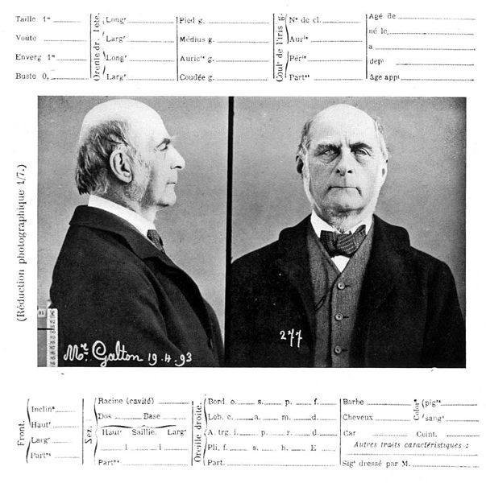

Tuesday, July the 27th, 2010
back to: title, date or indexes
“He was an expert in many subjects and intervened widely in others. Among his contributions to learned journals were papers on meteorology, navigation, surveying, anthropology, archaeology, painting, photography, the use of spectacles by divers, ultrasonic whistles, diet fads, currency reform, visions, corporal punishment, the ideal length of rope for hanging people, the flashing of signals to Mars, and dozens of other topics. Almost as numerous were his inventions, ranging from advanced scientific instruments to gadgets for personal convenience. At the age of thirteen he designed a steam flying machine, followed by an hour-glass speedometer for bicycles, and, in later life, a periscope for seeing over the heads of crowds. It was used for viewing processions, of which he was particularly fond, in conjunction with a wooden brick, wrapped in cloth and tied to a string so that it could be lowered to the ground for standing on.”
I know what you're thinking. Did Dobson and Blötzmann spawn some kind of love-child (perhaps using a technique concocted by the latter)? But no. Apart from anything else, that would be chronologically incoherent, like a leech doctor with a brain scanner. It is in fact Francis Galton, as described in Eccentric Lives And Peculiar Notions by John Michell (1984). There is a touch, too, of Joost Van Dongelbraacke, the suburban shaman. Michell notes that Galton
“was strongly religious, but the only type of worship that appealed to him was the spontaneous variety he had seen among the Africans. He considered that their chants, dances and fetish worship expressed the genuine religious spirit of the natural man. As usual, he put that belief to practical test. Looking round for the least worshipful object he could find, he hit upon the comic figure of Mr Punch, and forced his mind into believing that it possessed divine powers. The experiment succeeded. He came to experience ‘a large share of the feelings a barbarian entertains towards his idol’, and for a long time he was unable to look at Mr Punch's grotesque features without a feeling of reverence.”

Photograph and Bertillon record of Francis Galton (1893)
Hooting Yard on the Air, November the 17th, 2011 : “Advice Regarding Eggs” (starts around 15:05)